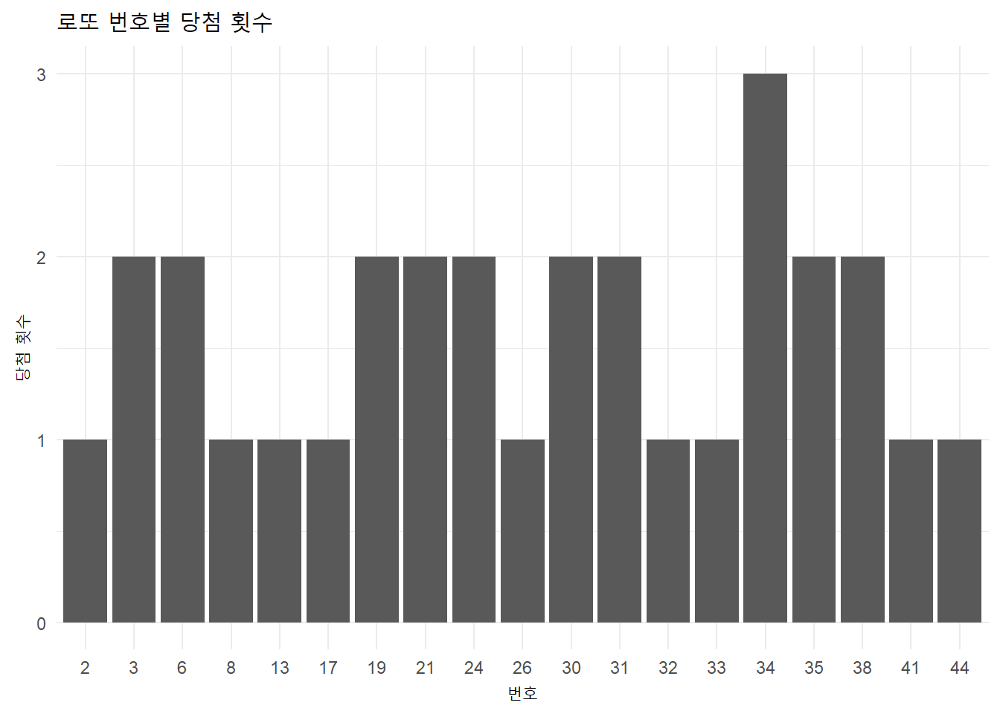

library(httr)Warning: package 'httr' was built under R version 4.3.3library(rvest)Warning: package 'rvest' was built under R version 4.3.3library(stringr)Warning: package 'stringr' was built under R version 4.3.3library(dplyr)Warning: package 'dplyr' was built under R version 4.3.3
Attaching package: 'dplyr'The following objects are masked from 'package:stats':
filter, lagThe following objects are masked from 'package:base':
intersect, setdiff, setequal, unionlibrary(ggplot2)Warning: package 'ggplot2' was built under R version 4.3.3lotto_numbers=list()
draw_numbers=c(1120, 1121, 1122, 1123, 1124)
for (draw_number in draw_numbers) {
url = 'https://www.dhlottery.co.kr/gameResult.do?method=byWin'
data_lotto <- POST(
url,
body = list(
drwNo = as.character(draw_number),
dwrNoList = as.character(draw_number)
)
)
data_lotto_html = data_lotto %>% read_html()
winning_numbers = data_lotto_html %>%
html_nodes('.num.win') %>%
html_text() %>%
str_extract_all('\\d+') %>%
unlist() %>%
as.numeric()
lotto_numbers[[draw_number]] = winning_numbers
Sys.sleep(2)
}
all_numbers = unlist(lotto_numbers)
# 빈도수 세기
number_counts = table(all_numbers)
# data frame
df = data.frame(
number = as.numeric(names(number_counts)),
frequency = as.numeric(number_counts)
)
# graph
ggplot(df, aes(x = factor(number), y = frequency)) +
geom_bar(stat = "identity") +
labs(
title = "로또 번호별 당첨 횟수",
x = "번호",
y = "당첨 횟수"
) +
theme_minimal()